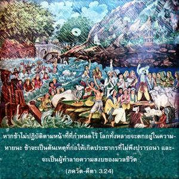
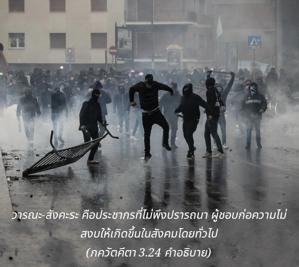
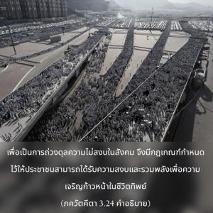
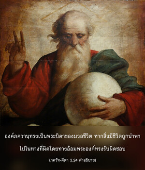
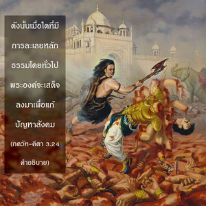

หากข้าไม่ปฏิบัติตามหน้าที่ที่กำหนดไว้ โลกทั้งหลายจะตกอยู่ในความหายนะ ข้าจะเป็นต้นเหตุที่ก่อให้เกิดประชากรที่ไม่พึงปรารถนา และจะเป็นผู้ทำลายความสงบของมวลชีวิต





วรฺณ-สงฺกร คือประชากรที่ไม่พึงปรารถนา ผู้ที่ชอบก่อความไม่สงบให้เกิดขึ้นในสังคมโดยทั่วไป เพื่อเป็นการถ่วงดุลความไม่สงบในสังคมจึงมีกฎเกณฑ์กำหนดไว้ให้ประชาชนสามารถได้รับความสงบ และรวมพลังเพื่อความเจริญก้าวหน้าในชีวิตทิพย์ เมื่อองค์ศฺรี กฺฤษฺณทรงเสด็จลงมาโดยธรรมชาติพระองค์ทรงปฏิบัติตามกฎเกณฑ์เหล่านี้เพื่อรักษาชื่อเสียง และทำให้เห็นถึงความจำเป็นในการปฏิบัติสิ่งสำคัญเหล่านี้ องค์ภควานฺทรงเป็นพระบิดาของมวลชีวิต หากสิ่งมีชีวิตถูกนำพาไปในทางที่ผิดโดยทางอ้อมพระองค์ทรงรับผิดชอบ ดังนั้นเมื่อใดที่มีการละเลยหลักธรรมโดยทั่วไปพระองค์จะเสด็จลงมาเพื่อแก้ปัญหาสังคม อย่างไรก็ดีเราควรจะระมัดระวังไว้ถึงแม้ว่าเราต้องปฏิบัติตามรอยพระบาทขององค์ภควานฺ เราควรจดจำไว้เสมอว่าเราไม่สามารถเลียนแบบพระองค์ การปฏิบัติตามและการเลียนแบบไม่เหมือนกัน เราไม่สามารถเลียนแบบองค์ภควานฺด้วยการยกภูเขา โควรฺธน ดังที่ทรงกระทำในขณะที่ยังทรงพระเยาว์ซึ่งเป็นสิ่งที่เป็นไปไม่ได้สำหรับมนุษย์ เราต้องปฏิบัติตามคำสั่งสอนของพระองค์ แต่ไม่ควรเลียนแบบพระองค์ไม่ว่าในขณะใดก็ตาม ศฺรีมทฺ-ภาควตมฺ (10.33.30-31) ยืนยันไว้ดังนี้
ไนตตฺ สมาจเรชฺ ชาตุ
มนสาปิ หฺยฺ อนีศฺวรห์
วินศฺยตฺยฺ อาจรนฺ เมาฒฺยาทฺ
ยถารุโทฺร ’พฺธิ-ชํ วิษมฺ
อีศฺวราณำ วจห์ สตฺยํ
ตไถวาจริตํ กฺวจิตฺ
เตษำ ยตฺ สฺว-วโจ-ยุกฺตํ
พุทฺธิมำสฺ ตตฺ สมาจเรตฺ
“เราควรปฏิบัติตามคำสั่งสอนขององค์ภควานฺ และผู้รับใช้ของพระองค์ที่ได้รับมอบอำนาจ คำสั่งสอนของท่านเหล่านี้ล้วนเป็นสิ่งที่ดีสำหรับพวกเรา ผู้ที่มีสติปัญญาจะปฏิบัติตามคำแนะนำเหล่านี้ อย่างไรก็ดีเราควรระวังว่าจะไม่พยายามเลียนแบบการกระทำของพวกท่าน เฉกเช่นเราไม่ควรดื่มมหาสมุทรยาพิษเพื่อเลียนแบบพระศิวะ”
เราควรพิจารณาตำแหน่งของ อีศฺวร หรือผู้ที่สามารถควบคุมการเคลื่อนไหวของดวงอาทิตย์และดวงจันทร์ว่าทรงเป็นผู้ยิ่งใหญ่อยู่เสมอ หากเราไม่มีพลังอำนาจเช่นนี้เราไม่สามารถเลียนแบบ อีศฺวร ผู้งทรงพลังที่สูกว่า พระศิวะทรงดื่มยาพิษถึงขนาดกลืนมหาสมุทรได้ แต่หากว่าคนธรรมดาสามัญทั่วไปพยายามดื่มยาพิษนี้แม้เพียงนิดเดียวจะตายทันที มีสาวกจอมปลอมมากมายของพระศิวะผู้ที่ต้องการจะสูบกัญชาและยาเสพติดในลักษณะเดียวกันนี้ โดยลืมไปว่าการเลียนแบบการกระทำของพระศิวะเช่นนี้เทียบเท่ากับเรียกหาความตายเข้ามาใกล้ตัว ในทำนองเดียวกันมีสาวกจอมปลอมขององค์กฺฤษฺณที่ชอบเลียนแบบองค์ภควานฺ ใน ราส-ลีลา หรือลีลาศแห่งความรัก โดยลืมไปว่าตนเองไม่มีความสามารถที่จะยกภูเขา โควรฺธน ได้ ฉะนั้นจึงเป็นการดีที่สุดที่เราจะไม่พยายามเลียนแบบพระองค์ผู้ทรงเดชเพียงแค่ปฏิบัติตามคำสั่งสอนก็พอแล้ว เราไม่ควรพยายามไปยึดตำแหน่งของพระองค์โดยที่เราไม่มีคุณสมบัติ มี“อวตาร” ขององค์ภควานฺอยู่เกลื่อนกลาดที่ปราศจากพระเดชแห่งองค์ภควานฺ